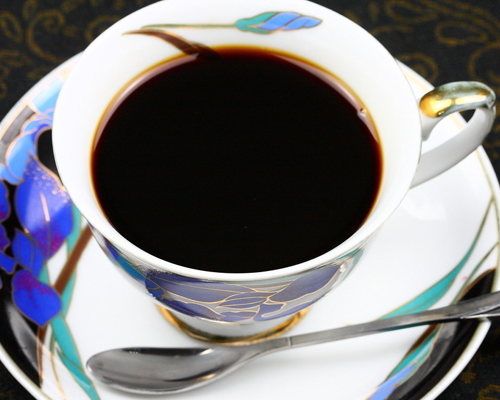

| N1.蓝山咖啡（Blue Mountain Coffee) | |
|  | 蓝山咖啡（Blue Mountain Coffee)蓝山咖啡的咖啡因含量很低，还不到其它咖啡的一半，符合现代人的健康观念。 牙买加岛上最早出现的咖啡，是1728年从拉丁美洲的海地传来的。到了1790年，从海地流亡来的难民中有一些咖啡农，他们在蓝山地区落脚，也把咖啡种植技术带到这里。1838年，牙买加废除奴隶制，允许被解放的奴隶耕种自己的土地。获得自由的奴隶搬到山里专门种植咖啡，并把咖啡出口到英国。咖啡受到英国上流社会的赞赏而逐渐闻名 |
| N2.摩卡咖啡（Mocha Coffee) | |
摩卡咖啡（CafeMocha）是一种最古老的咖啡，埃塞俄比亚被称为咖啡发源地，拥有堪称咖啡原产地的历史和传统的农产国，以其所生产的“摩卡-Mocha”咖啡最为有名，在西方Mocha除是咖啡品种名称之外，同时还是指冲泡制作咖啡的方法或是煮咖啡的器具及特殊的调理方法，摩卡咖啡豆多为干燥式处理，但也有所谓的极品水洗豆，摩卡咖啡豆以其所散发的酸味著称，同时具有微甜，微酒香，咖啡因含量少。 |
|
| N3.圣多斯咖啡（Santos Coffee） | |
巴西的咖啡文化始于1727年，在巴西的北方兴起，是由一位FrancescodeMelopalhata先生将咖啡种子从法国偷偷带到巴西。在当时这可是当今垄断咖啡业务的法国人所极力反对的。那些种子就是现在三亿多株巴西咖啡树的祖先。咖啡种植面积广，是世界上最大的咖啡出口国。但甚为有名的“圣多斯”他的名字来自于船运咖啡的港口，首都圣保罗四周山谷地区的咖啡。 |
|